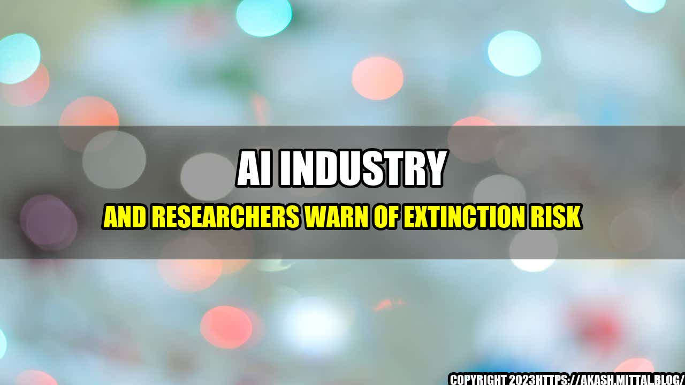

Are We Heading Towards Extinction? AI Industry and Researchers Warn!

Imagine a world where the population has dwindled to less than a hundred. Cities are in ruins, vegetation and wildlife have taken over, and the only remnants of human civilization are the rusty metal structures dotting the horizon.
This post-apocalyptic scenario might seem like the stuff of Hollywood blockbusters, but it could become a reality if we don't act quickly to mitigate the risks posed by artificial intelligence, according to a group of experts from the AI industry and academia.
"The extinction risks associated with advanced AI should be taken seriously. They are real, and they are pressing. We have a precious opportunity to get this right, and we must not fail."
The Risks of Advanced AI
The fears of the AI experts revolve around the potential misuse of advanced AI, which could lead to catastrophic outcomes for humanity. Some of the scenarios they describe include:
Unintended consequences: As AI becomes more complex and sophisticated, its behavior may become unpredictable and difficult to understand. This could lead to unintended consequences that are difficult or impossible to fix.
Risk amplification: AI could magnify existing risks, such as cyberattacks or environmental disasters, or create new risks that we have never experienced before.
Weaponization: AI could be used to create autonomous weapons that could make decisions without human intervention, leading to a new arms race and potentially disastrous consequences for global security.
Job displacement: AI could lead to massive job displacement and social unrest, particularly if we don't take steps to prepare for the transition.
The experts warn that the risks associated with AI are not just theoretical, but are already beginning to emerge in some areas. Here are some examples:
The social media echo chamber: AI algorithms are already being used to personalize our social media feeds, showing us only content that reinforces our existing beliefs. This can lead to polarization and tribalism, making it more difficult for us to find common ground and work together on important issues.
Autonomous weapons: Military powers around the world are already investing in AI-powered weapons that can make decisions without human intervention. Some experts argue that this could lead to a new arms race, worsen global conflicts, and even trigger a nuclear war.
Disinformation campaigns: AI algorithms can be used to spread fake news and disinformation, making it more difficult for people to distinguish fact from fiction. This can have serious consequences for democratic societies, as we've seen in recent elections in the US and Europe.
Conclusion
So, what can we do to mitigate the risks associated with AI? Here are three key takeaways:
Invest in research: We need more research into the potential risks and benefits of AI, as well as into ways to mitigate the risks and maximize the benefits. This should involve a wide range of stakeholders, including AI experts, policymakers, civil society, and the general public.
Regulate the use of AI: We need regulations and standards to ensure that AI is developed and used in a responsible and ethical way. This could include laws and guidelines on safety, transparency, accountability, and privacy.
Invest in education and training: We need to prepare for the transition to an AI-powered economy by investing in education and training programs that help people adapt to the changing job market. This could include retraining programs, job placement services, and income support for those who are most affected by the transition.
Curated by Team Akash.Mittal.Blog
Share on Twitter Share on LinkedIn